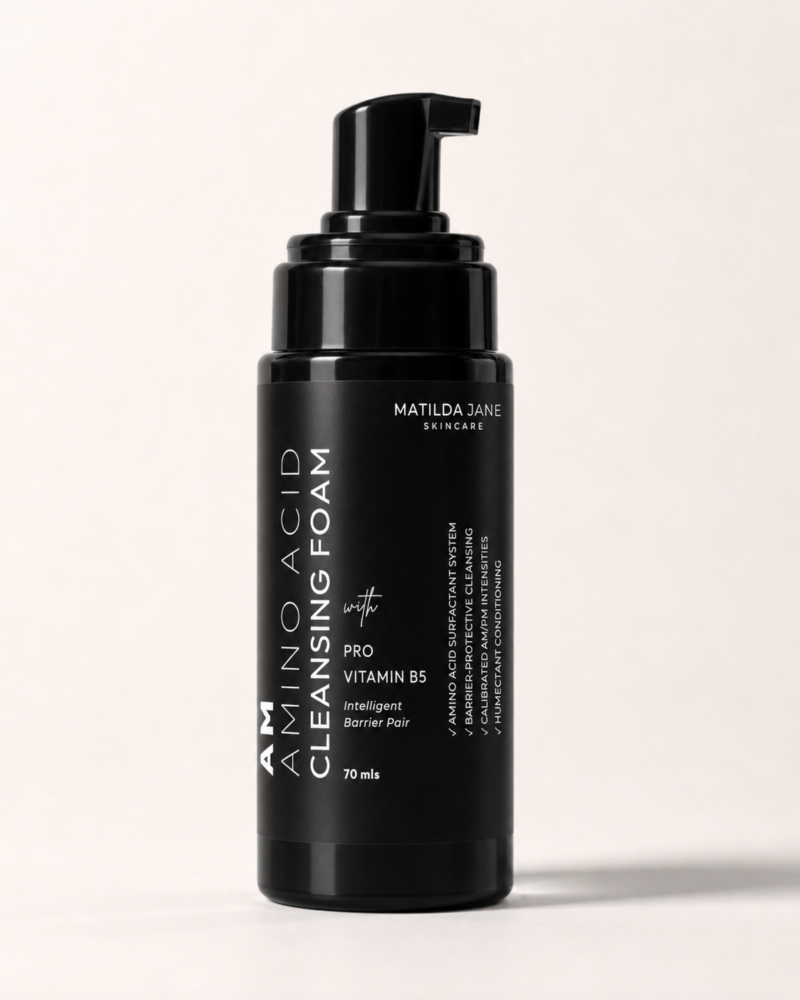
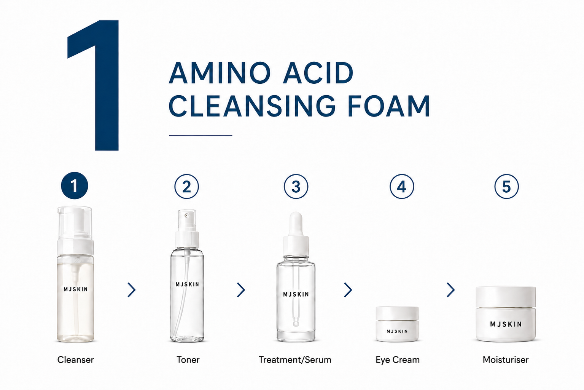
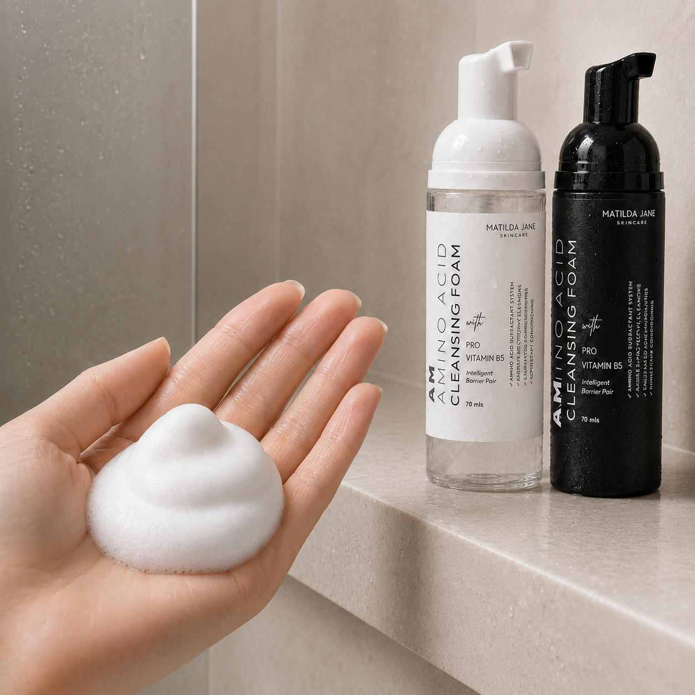

Barrier Restore — a deeper evening cleanse.

A deeper evening cleanse. A higher active level thoroughly removes sunscreen, sebum and the day's buildup, while staying gentle on the barrier.
The amino acid surfactants thoroughly lift sunscreen, sebum and buildup while staying gentle on the skin's barrier.1 A refatting complex deposits skin-friendly lipids that stay behind after rinsing,2 and a humectant base of glycerin and Pro-Vitamin B5 limits moisture loss3 — so a deeper clean doesn't leave skin tight. Formulated at pH 5.0–5.3, in step with the skin's acid mantle.4
Normal, combination and oily skin that wants a thorough evening clean for sunscreen, sebum and the day's buildup. Use as a single cleanse, or as the second step after an oil or balm.
Amino Acid Surfactant System
Mild, coconut-derived surfactants, led by sodium cocoyl glutamate, that build a soft foam and lift oil, sunscreen and buildup — without stripping the natural oils that keep skin hydrated and the barrier strong.
Lipid Refatting Complex
Coco-glucoside and glyceryl oleate deposit a fine layer of skin-friendly plant lipids that stays behind after rinsing — replacing what washing removes, so skin doesn't feel tight.
Pro-Vitamin B5 (Panthenol)
Helps skin hold onto moisture, supports the barrier, and leaves skin soft and comfortable.
Pump 1–2 times onto damp skin, or use as a second cleanse after an oil or balm. Massage gently for 20–30 seconds. Rinse with lukewarm water. Use in the evening. For eye or waterproof makeup, use an oil or balm cleanser first.

Pro Tips
Storage
Store in a cool, dry place away from heat and direct sunlight.
Cautions
Patch test before first use. For external use only. Avoid contact with eyes. Discontinue use if irritation occurs.
Aqua, Sodium Cocoyl Glutamate, Cocamidopropyl Betaine, Glycerin, Caprylyl/Capryl Glucoside, Coco-Glucoside, Glyceryl Oleate, Panthenol, Dehydroacetic Acid, Benzyl Alcohol, Pelargonium Graveolens Flower Oil, Citrus Aurantiifolia Peel Oil, Boswellia Carterii Oil.
Yes. The higher active level gives oilier skin a thorough evening clean while staying gentle on the barrier.
It removes sunscreen, sweat and daily buildup. For makeup — especially eye or waterproof formulas — use it after an oil or balm cleanser.
Yes. It works well after an oil or balm cleanser on heavy SPF or makeup days.
A light natural scent from essential oil — Lime, Geranium & Frankincense — within IFRA limits. No synthetic fragrance. Email us for a fragrance-free version.
Yes. No retinoids, no salicylic acid, no synthetic fragrance.
Amino Acid Surfactants · Lipid Refatting · Pro-Vitamin B5
Mild, coconut-derived surfactants, led by sodium cocoyl glutamate, that build a soft foam and lift oil, sunscreen and buildup — without stripping the natural oils that keep skin hydrated and the barrier strong.

Coco-glucoside and glyceryl oleate deposit a fine layer of skin-friendly plant lipids that stays behind after rinsing — replacing what washing removes, so skin doesn't feel tight.
Helps skin hold onto moisture, supports the barrier, and leaves skin soft and comfortable.